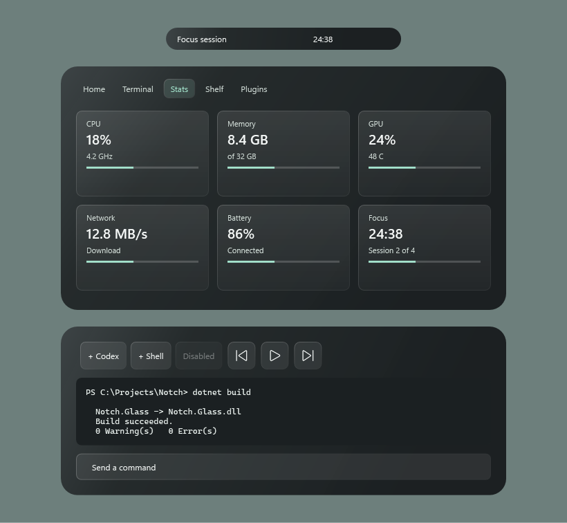

A dynamic notch for Windows 11
A small black pill at the top of your screen that grows to show what is happening: music, volume, timers, and your coding agents.
Download for Windows View sourceWhat it does
Always on top, never takes focus, and gets out of the way of fullscreen games.
Media
Whatever is playing shows with its artwork, with play/pause, skip and click-to-seek when expanded.
System HUDs
Volume, audio output, brightness, charger, low battery, Bluetooth devices connecting and Caps Lock.
Shelf
Drag files onto the pill to put them aside, then drag them out into any app or folder when you need them.
Terminal for Claude Code, Codex and opencode
A real terminal in the notch. The pill shows whether an agent is working, needs input, or is done.
Agents anywhere
Claude Code, Codex, opencode, Gemini CLI and Aider are found wherever they run, in Windows Terminal, VS Code or any other shell. Click one to bring its window forward.
Command palette
One hotkey and a search box: start a timer, jump to a tab or an agent, open a terminal, switch a plugin on.
Clipboard history
Optional. Search what you copied, pin what you need, copy it again. Kept in memory, and password managers' copies are never kept.
Scriptable
notch:// links, a notchctl command and a local webhook let scripts and CI show things in the pill.
Widgets
Timer with Pomodoro mode, upcoming events from .ics feeds, and live CPU, memory, GPU, network and battery stats.
Notch or island
Grow out of the screen edge or float as a Dynamic Island, at the top or in the taskbar.
Themes
Dark, light or follow Windows, with your own accent colour.
Inside
Hover the pill, or press a hotkey, and it opens. Home has what is playing, a timer and your calendar; Stats shows the machine; the Shelf holds files for later.


Glow that means something
The pill lights up in a colour and rhythm that matches the moment.
An agent is workingAn agent needs youIt is doneVolume Charger connected
Charger connected Bluetooth device
Bluetooth device Low battery
Low battery Caps LockMusic, in the artwork's colour
Caps LockMusic, in the artwork's colourInstall
- Download
Notch-Setup-<version>.exefrom the latest release. - Run it. It installs for your user, with no admin rights.
- The installer is not code-signed, so SmartScreen will ask you to confirm.
Installed copies check this repository's releases and tell you when a newer one is ready; you install it from Settings when you choose. The notices can be turned off.
Plugins
Small .NET libraries can add their own activities to the pill, cards to a Plugins tab, and whole themes. Browse the list and press Install: Notch opens, shows what the plugin is, and installs it only if you say yes. Or type a GitHub repository into the Plugins box in Settings.
Brick-Bread/WNotch
Browse plugins Read the plugin guide · Sample plugin
Notch Glass: Smoked
A theme plugin that restyles the pill, cards, buttons, tabs and terminal as translucent charcoal glass with mint highlights. Install it with Brick-Bread/wnotch-glass, then pick Glass / Smoked under Plugin theme.

Preview rendered from the theme's real styles in a sample layout. Source and frosted variant